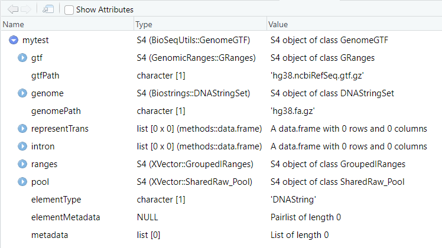

Chapter 2 Extract sequence
The main reason for this package name BioSeqUtils is that I write some utilities to extract multiple feature sequences from annotation file, like transcript, UTR, CDS. Also it’s my experience to practice with R language. The following are examples show how to use.
2.1 Data loading
First we can load gtf and genome file from local of your own using loadGenomeGTF and return a GenomeGTF object:
# devtools::install_github("junjunlab/BioSeqUtils")
library(BioSeqUtils)
# make object
mytest <- loadGenomeGTF(gtfPath = "hg38.ncbiRefSeq.gtf.gz",
genomePath = "hg38.fa.gz")
## GenomeGTF object for Extracting sequences.
## GTF file is loaded.
## genome file is loaded.
## representTrans file is NULL.
## intron slot is NULL.
2.2 Get features information
getTransInfo will summarize all the gene’s transcript length information of different features. selecType controls the filtering rule, lcds mode means that sorting the CDS length and then transcript length to select the top transcript with topN parameter. lt mode means that sorting the transcript length to select the top transcript. You can get all transcript information when you set topN=0. Here are some examles:
# all gene
gene <- unique(mytest@gtf$gene_name)
# get transcript info
rt <- getTransInfo(object = mytest,geneName = gene,
selecType = "lcds",topN = 1)
# check
head(rt,3)
# # A tibble: 3 × 11
# # Groups: gene_name, gene_id [3]
# gene_name gene_id transcript_id exon CDS `3UTR` `5UTR` gtype cdsst cdsed tname
# <chr> <chr> <chr> <dbl> <dbl> <dbl> <dbl> <chr> <dbl> <dbl> <chr>
# 1 A1BG A1BG NM_130786.4 3382 1485 1839 55 CD 56 1541 A1BG|A1BG|NM_130786.4|56|1541|3382|CD
# 2 A1BG-AS1 A1BG-AS1 NR_015380.2 2130 0 0 0 NC 1 2130 A1BG-AS1|A1BG-AS1|NR_015380.2|1|2130|2130|NC
# 3 A1CF A1CF NM_001198819.2 9481 1806 7320 352 CD 353 2159 A1CF|A1CF|NM_001198819.2|353|2159|9481|CD2.3 Extract sequnence
getFeatureFromGenome function can be used to extract multiple feature sequence which can be 5UTR, 3UTR, exon, intron. Setting the geneSeq=T to get genomic sequence. up.extend and dn.extend can extend your target sequence when you extract.
longesttrans <- getFeatureFromGenome(mytest,transId = rt$transcript_id[1:10],type = "exon")
longesttrans
# DNAStringSet object of length 57285:
# width seq names
# [1] 3382 ATTGCTGCAGACGCTCACCCCAGACACTCACT...ATTTTGCACACTTTAAAATATTGGGTTGTTT A1BG|A1BG|NM_1307...
# [2] 2130 ATTTTTAGTAGAGACGGGGTTTCGTCATGTTG...TGAAATACCTAGTGTGGTTTCTATTTCCTGA A1BG-AS1|A1BG-AS1...
# [3] 9481 ATAATCAAGGAAACCTTTTCCGGGTGGGGATC...AGTGCCATTATAAAGTTTTAAAAATTATCAA A1CF|A1CF|NM_0011...
# [4] 4953 GGGACCAGATGGATTGTAGGGAGTAGGGTACA...TGATGAATAAACACTTTTTCTGGTCAATGTC A2M|A2M|XM_006719...
# [5] 2300 CATCAGCCCAGCCTGCAAGGAGGCGCCACCGG...GCGGCCCTCTCCAATAAATGTGTTTTTCTAT A2M-AS1|A2M-AS1|N...
# ... ... ...
# [57281] 8143 GGAGTCTGCGCTCTGGTTCGGGCTGCGGCTGC...TTTTTTGCCTAAATAAATGTTATAAATTTTA ZYG11B|ZYG11B|NM_...
# [57282] 118 GTGTTACAAGTGAGAGGACTGTGGGAAGCCCC...TGAGAACTGCCTTCCTTCTGGACCCACGACC ZYXP1|ZYXP1|ZYXP1...
# [57283] 9136 AGGAAGCCGGAAGCCGCAGGGGCCGCCGTCGT...AGAGCATGCACGAGCCCCATTTATCAGAGTC ZZEF1|ZZEF1|XM_01...
# [57284] 6475 ACCTGGAAGCGCCGCGGCGCCGCTATCGAGCT...TGTGCTATATAAAACTATTTCTTATTGTGGA ZZZ3|ZZZ3|NM_0013...
# [57285] 2206 GATTAGAGCCTCCCACAGGTGCTCCCCAATTT...GCCCAGTAATAAAGTTTTATGATCTTTTAAA bA255A11.4|bA255A...
# output
Biostrings::writeXStringSet(longesttrans,filepath = "testlongest.fa",format = "fasta")getFeatureFromGenome works slowly when applying to thousands of sequences. So I wrote a python script named pyExtractSeq to do the same thing which has a huge speed improvement. You can use it directly in R. The following is the comparison:
# get exon sequence
system.time(longesttrans <- getFeatureFromGenome(mytest,
transId = rt2$transcript_id[1:5000],
type = "exon"))
# getFeatureFromGenome is running [==================================] 100% in 5m
# 用户 系统 流逝
# 216.31 10.47 299.44
# using python code
system.time(pyExtractSeq(gtf_file = "./hg38.ncbiRefSeq.gtf",
genome_file = "./hg38.fa",
transcript_id = rt2$transcript_id[1:5000],
new_id = rt2$tname[1:5000],
type = "exon",
out_file = "output_test.fasta"))
# 用户 系统 流逝
# 5.13 0.83 14.192.4 Get inrton information
getIntronInfo allows you to get a inrton coordinate information which is similar to gtf format.
# get intron info
getIntronInfo(mytest,geneName = "MYC")
# seqnames start end width strand source
# 1 chr8 127736624 127738247 1624 + ncbiRefSeq.2022-10-28
# 2 chr8 127739020 127740395 1376 + ncbiRefSeq.2022-10-28
# 3 chr8 127736624 127738250 1627 + ncbiRefSeq.2022-10-28
# 4 chr8 127739020 127740395 1376 + ncbiRefSeq.2022-10-28
# type score phase gene_id transcript_id gene_name exon_number
# 1 intron NA NA MYC NM_002467.6 MYC 1
# 2 intron NA NA MYC NM_002467.6 MYC 2
# 3 intron NA NA MYC NM_001354870.1 MYC 1
# 4 intron NA NA MYC NM_001354870.1 MYC 2
# exon_id
# 1 NM_002467.6.1
# 2 NM_002467.6.2
# 3 NM_001354870.1.1
# 4 NM_001354870.1.2
# define transcript_id
getIntronInfo(mytest,geneName = "MYC",transId = "NM_002467.6")
# seqnames start end width strand source
# 1 chr8 127736624 127738247 1624 + ncbiRefSeq.2022-10-28
# 2 chr8 127739020 127740395 1376 + ncbiRefSeq.2022-10-28
# type score phase gene_id transcript_id gene_name exon_number
# 1 intron NA NA MYC NM_002467.6 MYC 1
# 2 intron NA NA MYC NM_002467.6 MYC 2
# exon_id
# 1 NM_002467.6.1
# 2 NM_002467.6.2
# define geneid
getIntronInfo(mytest,geneId = "MYC",transId = "NM_002467.6")
# seqnames start end width strand source
# 1 chr8 127736624 127738247 1624 + ncbiRefSeq.2022-10-28
# 2 chr8 127739020 127740395 1376 + ncbiRefSeq.2022-10-28
# type score phase gene_id transcript_id gene_name exon_number
# 1 intron NA NA MYC NM_002467.6 MYC 1
# 2 intron NA NA MYC NM_002467.6 MYC 2
# exon_id
# 1 NM_002467.6.1
# 2 NM_002467.6.2
# multiple genes
getIntronInfo(mytest,geneName = c("MYC","H19"))
# getIntronInfo is running [=========================================] 100% in 0s
# seqnames start end width strand source type score phase gene_id transcript_id
# 1 chr11_ML143358v1_fix 188317 188397 81 - ncbiRefSeq.2022-10-28 intron NA NA H19 NR_002196.2
# 2 chr11_ML143358v1_fix 188521 188600 80 - ncbiRefSeq.2022-10-28 intron NA NA H19 NR_002196.2
# 3 chr11_ML143358v1_fix 188714 188808 95 - ncbiRefSeq.2022-10-28 intron NA NA H19 NR_002196.2
# 4 chr11_ML143358v1_fix 188944 189039 96 - ncbiRefSeq.2022-10-28 intron NA NA H19 NR_002196.2
# 5 chr11_ML143358v1_fix 188311 188397 87 - ncbiRefSeq.2022-10-28 intron NA NA H19 NR_131223.1
# 6 chr11_ML143358v1_fix 188521 188600 80 - ncbiRefSeq.2022-10-28 intron NA NA H19 NR_131223.1
# 7 chr11_ML143358v1_fix 188714 188808 95 - ncbiRefSeq.2022-10-28 intron NA NA H19 NR_131223.1
# 8 chr11_ML143358v1_fix 188944 189039 96 - ncbiRefSeq.2022-10-28 intron NA NA H19 NR_131223.1
# 9 chr11_ML143358v1_fix 188317 188397 81 - ncbiRefSeq.2022-10-28 intron NA NA H19 NR_131224.1
# 10 chr11_ML143358v1_fix 188521 188600 80 - ncbiRefSeq.2022-10-28 intron NA NA H19 NR_131224.1
# 11 chr11_ML143358v1_fix 188714 188808 95 - ncbiRefSeq.2022-10-28 intron NA NA H19 NR_131224.1
# 12 chr11_ML143358v1_fix 188944 193739 4796 - ncbiRefSeq.2022-10-28 intron NA NA H19 NR_131224.1
# 13 chr11 1995795 1995875 81 - ncbiRefSeq.2022-10-28 intron NA NA H19 NR_002196.2_2
# 14 chr11 1995999 1996078 80 - ncbiRefSeq.2022-10-28 intron NA NA H19 NR_002196.2_2
# 15 chr11 1996192 1996286 95 - ncbiRefSeq.2022-10-28 intron NA NA H19 NR_002196.2_2
# 16 chr11 1996422 1996517 96 - ncbiRefSeq.2022-10-28 intron NA NA H19 NR_002196.2_2
# 17 chr11 1995789 1995875 87 - ncbiRefSeq.2022-10-28 intron NA NA H19 NR_131223.1_2
# 18 chr11 1995999 1996078 80 - ncbiRefSeq.2022-10-28 intron NA NA H19 NR_131223.1_2
# 19 chr11 1996192 1996286 95 - ncbiRefSeq.2022-10-28 intron NA NA H19 NR_131223.1_2
# 20 chr11 1996422 1996517 96 - ncbiRefSeq.2022-10-28 intron NA NA H19 NR_131223.1_2
# 21 chr11 1995795 1995875 81 - ncbiRefSeq.2022-10-28 intron NA NA H19 NR_131224.1_2
# 22 chr11 1995999 1996078 80 - ncbiRefSeq.2022-10-28 intron NA NA H19 NR_131224.1_2
# 23 chr11 1996192 1996286 95 - ncbiRefSeq.2022-10-28 intron NA NA H19 NR_131224.1_2
# 24 chr11 1996422 2001217 4796 - ncbiRefSeq.2022-10-28 intron NA NA H19 NR_131224.1_2
# 25 chr8 127736624 127738247 1624 + ncbiRefSeq.2022-10-28 intron NA NA MYC NM_002467.6
# 26 chr8 127739020 127740395 1376 + ncbiRefSeq.2022-10-28 intron NA NA MYC NM_002467.6
# 27 chr8 127736624 127738250 1627 + ncbiRefSeq.2022-10-28 intron NA NA MYC NM_001354870.1
# 28 chr8 127739020 127740395 1376 + ncbiRefSeq.2022-10-28 intron NA NA MYC NM_001354870.1
# gene_name exon_number exon_id
# 1 H19 4 NR_002196.2.4
# 2 H19 3 NR_002196.2.3
# 3 H19 2 NR_002196.2.2
# 4 H19 1 NR_002196.2.1
# 5 H19 4 NR_131223.1.4
# 6 H19 3 NR_131223.1.3
# 7 H19 2 NR_131223.1.2
# 8 H19 1 NR_131223.1.1
# 9 H19 4 NR_131224.1.4
# 10 H19 3 NR_131224.1.3
# 11 H19 2 NR_131224.1.2
# 12 H19 1 NR_131224.1.1
# 13 H19 4 NR_002196.2_2.4
# 14 H19 3 NR_002196.2_2.3
# 15 H19 2 NR_002196.2_2.2
# 16 H19 1 NR_002196.2_2.1
# 17 H19 4 NR_131223.1_2.4
# 18 H19 3 NR_131223.1_2.3
# 19 H19 2 NR_131223.1_2.2
# 20 H19 1 NR_131223.1_2.1
# 21 H19 4 NR_131224.1_2.4
# 22 H19 3 NR_131224.1_2.3
# 23 H19 2 NR_131224.1_2.2
# 24 H19 1 NR_131224.1_2.1
# 25 MYC 1 NM_002467.6.1
# 26 MYC 2 NM_002467.6.2
# 27 MYC 1 NM_001354870.1.1
# 28 MYC 2 NM_001354870.1.2
# multiple transcript_ids
getIntronInfo(mytest,transId = c("NR_002196.2","NM_002467.6"))
# seqnames start end width strand source type
# 1 chr11_ML143358v1_fix 188317 188397 81 - ncbiRefSeq.2022-10-28 intron
# 2 chr11_ML143358v1_fix 188521 188600 80 - ncbiRefSeq.2022-10-28 intron
# 3 chr11_ML143358v1_fix 188714 188808 95 - ncbiRefSeq.2022-10-28 intron
# 4 chr11_ML143358v1_fix 188944 189039 96 - ncbiRefSeq.2022-10-28 intron
# 5 chr8 127736624 127738247 1624 + ncbiRefSeq.2022-10-28 intron
# 6 chr8 127739020 127740395 1376 + ncbiRefSeq.2022-10-28 intron
# score phase gene_id transcript_id gene_name exon_number exon_id
# 1 NA NA H19 NR_002196.2 H19 4 NR_002196.2.4
# 2 NA NA H19 NR_002196.2 H19 3 NR_002196.2.3
# 3 NA NA H19 NR_002196.2 H19 2 NR_002196.2.2
# 4 NA NA H19 NR_002196.2 H19 1 NR_002196.2.1
# 5 NA NA MYC NM_002467.6 MYC 1 NM_002467.6.1
# 6 NA NA MYC NM_002467.6 MYC 2 NM_002467.6.22.5 Extract promoters
getPromoters allows you to extract promoter sequence for gene:
# get promoters
pro <- getPromoters(mytest,geneName = c("AAC1","THI74"))
pro
# DNAStringSet object of length 2:
# width seq names
# [1] 2000 ATCGCGGTAAGCAGTCCCTGGAGACCATTTTAC...TAGAGGCAAAAAATAAAAAGTAAGCAGGAGAA THI74|YDR438W|YDR...
# [2] 2000 CGGCTTTAAACCTGATGACGAAATTGGATTGTG...TTCTTTTCTATTTTTCCTTTTTACAGCAGTAA AAC1|YMR056C|YMR0...
# same code
# pro <- getPromoters(mytest,geneName = c("AAC1","THI74"),
# up.extend = 2000,
# dn.extend = 0)2.6 Extract non-redundant transcript length
As we knonw, a gene have multiple isoforms. So how should we quantify the gene expression with standard gene length. The featureCounts command from subread package is used to quantify gene expression with using non-redundant exon length. getNonRedundantLength can do the same thing:
# make object
mytest <- loadGenomeGTF(gtfPath = "hg38.ncbiRefSeq.gtf.gz")
## GenomeGTF object for Extracting sequences.
## GTF file is loaded.
## genome file is NULL.
## representTrans file is NULL.
## intron slot is NULL.
# select 300 genes
gene <- unique(mytest@gtf$gene_name)[1:200]
len <- getNonRedundantLength(object = mytest,geneName = gene)
# getNonRedundantLength is running [=================================] 100% in 19s
# check
head(len)
# gene_name gene_id exonLength
# 1 TRNP TRNP 68
# 2 TRNT TRNT 66
# 3 CYTB CYTB 1141
# 4 TRNE TRNE 69
# 5 ND6 ND6 525
# 6 ND5 ND5 1812